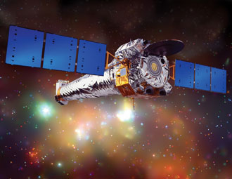
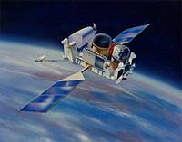
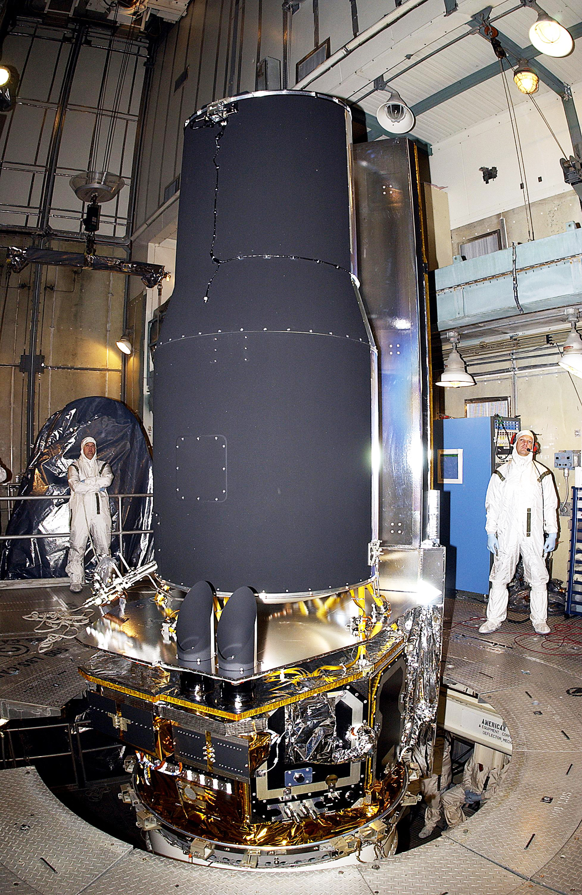

5 Jan
Name:LADEE
Cost:$9 Million
Location:Jaxa
Mission:Moon Orbit
Please Turn your device for an optimised layout.
▲ Picture: Lift-off at the Houston launching pad. (Source: NASA Medialibrary)
5 Jan
Name:LADEE
Cost:$9 Million
Location:Jaxa
Mission:Moon Orbit
4 Feb
Name:BanoBot
Cost:$9 Trillion
Location:Kruishoutem
Mission:Sun Landing
30 Apr
Name: IBEX
Cost:€2 Million
Location: Fr. Guinea
Mission:Earth Orbit
16 May
Name: Spitzer
Cost:$4 Million
Location: Cape Can.
Mission:Earh Orbit
26 June
Name:SpaceX
Cost:$1.2 Billion
Location:Cape Can.
Mission:ISS Resupply
13 July
Name:60P Cargo
Cost:€ 560.000
Location:Cape Can.
Mission:Repare Pod
20 July
Name:Expedition 44
Cost:$6 Million
Location:Kazakhstan
Mission:ISS resupply
22 July
Name:Jason-3
Cost:$1.1 Million
Location:Cape Can.
Mission:NOAA mission
15 Aug
Name:HTV5
Cost:€6 Million
Location:Fr. Guinea
Mission:ISS resupply
1 Sept
Name:Expedition 45
Cost:€560.000
Location:Roscosmos
Mission:ISS resupply
22 Okt
Name:61P
Cost:£780.000 GBP
Location:Jaxa
Mission:ISS refuel
22 Nov
Name:Europa Clipper
Cost:$64 Million
Location:Cape Can.
Mission:Interstellar
Chandra will see Space in X-Ray vision
Compton will see Space in Ultraviolet vision
Hubble is the strongest Ocular Lens in use.

Spitzer will see Space in Infrared vision
These Spacecrafts are all part of the GOP.
Hover on a Spacecraft for more information.
Click on the image for even more detailed information.
The GOP project, or in full, the Great Observatories Project, has been initiated to achieve following goals.
Measure the burst of solar flames and the amount of solar wind active. This can be measured by the combination of infrared and ultraviolet region scanning.
Have a better understanding of the space architecture by sectoring and scanning the space. The Hubble Space Telescope is perfect for this type of region scanning.
Next to cataloging space, the HST is used for interstellar research. The craft can be used by scientists on demand in order to investigate for life in remote spacesectors.
The use of Compton, mapping a thermodynamical view of space, is obsolete as the Compton had a malfunction and fell back in the Earths atmosphere where it burned down.
The Great Observatories Project, an initiative by NASA and supported by the ESA, is created in order to get a better insight in the interstellar space architectures.
It's greatest discoveries are based on questions as: "What's behind our solar system", "Are other solar systems like ours", "Is there a planet out there with an earth like climate?"
The Hubble space telescope has served it's purpose mainly for looking into space architecture. It's most known photograph is the 'Hubble Deepspace' photograph, where the hubble managed to capture the likes of a supercluster.
The other spacecrafts has worked together witht the HST to get a full-scaled vieuw of the scanned sector. Aside that, they are also monitorring the solar activity in order to warn earth for an increase in solar wind.
Only the Compton, which malfunctioned a few years after lauch, is inoperable. The other crafts are still actively operation as we speak.
The STEREO mission has two similar crafts, named the STEREO ahaid and the STEREO behind.
For more information about these crafts, you can click this link to the spacecraft page.
Both the STEREO's are the same type of craft. They just have an other geographical location.
The main objective for the STEREO mission is to monitor the sun's radiation and wind. With one on each orbit side of the earth, it's possible to map the solar activity almost accurately.
These crafts have send a distress signal in 2012, when a huge solar flare escaped the sun. That's why we were warned and advised to stay inside.
One of the STEREO crafts is positioned ahaid of earth's orbit. You could say that the satellite 'lives' a few months ahaid of us. It rotates, just as earth, around the sun.
The other craft, as the name suggest, is behind us.
The pictures of the two crafts combined make it possible to view the sun in a semi-3D point of view.
The STEREO mission has been initiated to understand a bit more of our ver own sun. Thanks to this mission scientist have gathered some critical data.
We've learned a lot from the STEREO's research. The age of the sun, the stage of development. It's temperature, surface and bursts. All that info originates from STEREO.
What makes the STEREO mission so different from the Solaris mission or any other Sun-related space mission is the possibility to analyse the subject on both sides. Where the Solaris had the disadvantage from shadow from passing planets, the STEREO is always available for reseach.
Making the two crafts orbit before and after earth, we can anticipate on events coming from nearly any direction from the sun.
If you see a local wheaterman warn for elevated solar radiation, chances are real that this info originated from STEREO.